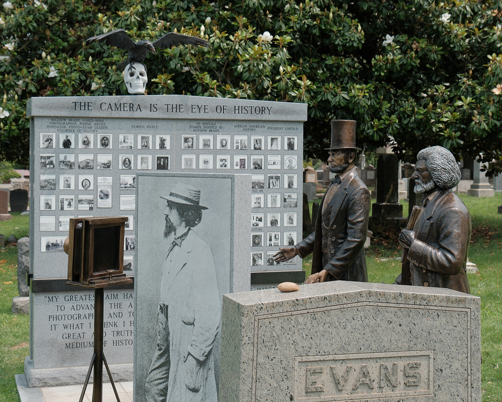

My camera and I went to pay tribute to Matthew Brady, the famous photographer of the Civil War. He died in 1896, and these days can best be found in the Congressional Cemetery in Washington, DC. Sure enough, he was hanging out with his pals, Abraham Lincoln and Fredrick Douglass (although they are buried elsewhere).

The cemetery has many former members of Congress, soldiers who fought in the Revolutionary War and Civil War and more. It also has a lot of dogs. You see, those congresspeople didn’t allocate funding for the upkeep of their graves. So the Cemetery hit upon an unusual funding strategy: for $15 you can let your dog roam free in the cemetery. And let me tell you: the dogs think this is the greatest thing ever! Rather few seemed to be concerned with paying their respects to Duffy, however.
As I followed a tour here and there, I came across:
- Elbridge Gerry, who allocated districts in Massachusetts in the shape of a salamander, and thus gave us the word “gerrymander.”
- John Philip Sousa, who gave us marches to play in high school band
- Cokie Roberts, famous NPR host
- Marion Barry, famous mayor of Washington DC
- Tom Lantos, congressman from San Francisco before Nancy Pelosi
- J. Edgar Hoover, boo hiss
- Taza, an Indian chief who was brought to DC and died of pneumonia